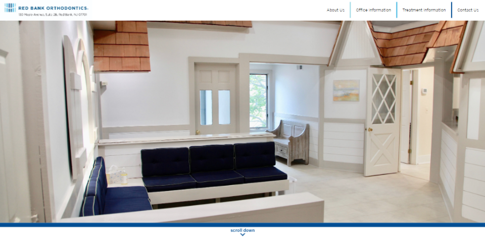
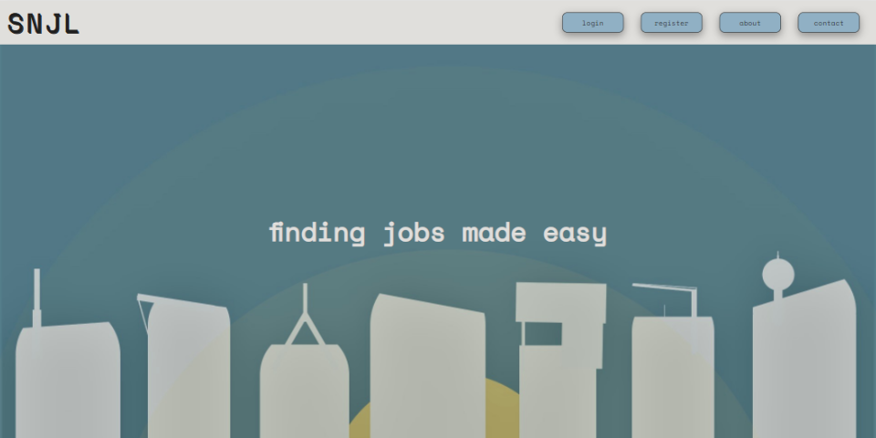
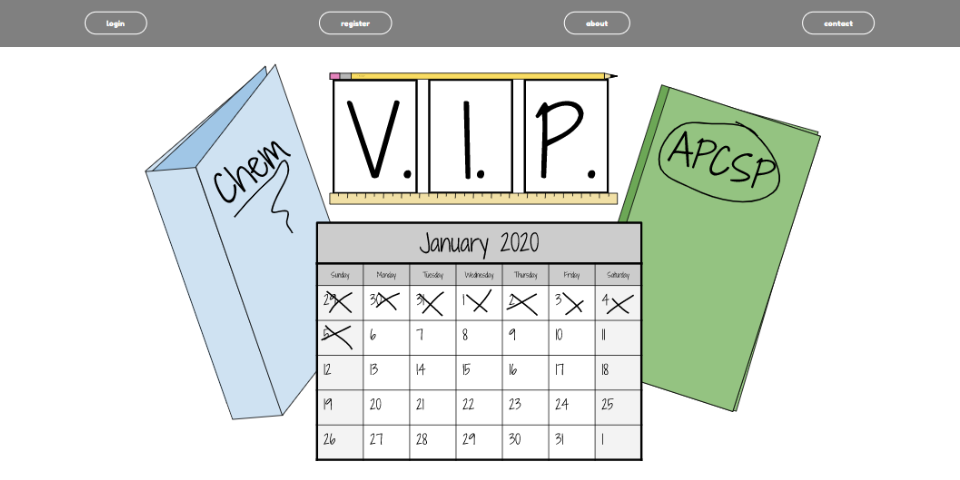
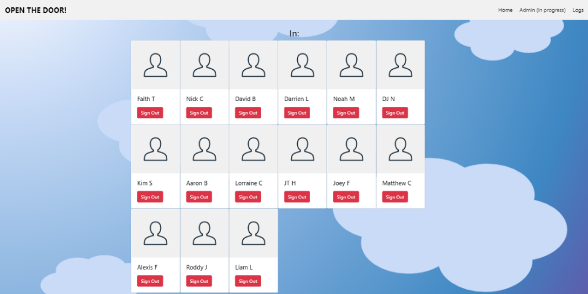

Hi, I'm
Freelance Web Designer and Developer
I design small-scale websites and comprehensive apps from Point Pleasant, New Jersey with a focus on producing dynamic web components for PCs and mobile devices. Feel free to contact me with the information below.

Red Bank Ortho (2020) - I designed and developed this website for Red Bank Orthodontics,
to replace their old website. It allows you to make appointments online
and fill out forms before you arrive. I also utilized dynamic styles to
fit both mobile and desktop devices and new development techniques such as
a menu bar and slideshow.

Special Needs Job Locator (2019) - This website was made for the special needs class in my school and
allows them to apply for jobs in their neighborhood. A large
amount of students from that classroom normally become factory workers
or do some type of manual labor - so I wanted to be able to
provide alternatives for them. With this service, employers can sign
up and make a job for students in the area to apply for. The teens
can filter through the occupations by their interests and distance
from their home.

Virtual Interactive Planner (2019) - This web application - which I was the lead programmer for - won
the Congressional App Challenge. It is a task manager website that
is still in progress and will soon allow you to plan scheduled times
for your homework and other activities throughout the day. Many students
have trouble planning their school work and after-school activities
that studies show can lead to anxiety and depression. This website attempts to
prevent that and instead provides an easy to understand UI for all
ages to plan their work.

Open The Door (2019) - This website was made for the special needs class when
one of the teachers confronted me about a problem they were having.
Too many students were leaving the classroom and wandering around
the halls for extended periods of time. This gave me the idea
to make a sign-in/sign-out application that allows the students
to easily enter where they are going and tap sign in when they
return. Teachers are then able to print the data logs at the end of the day.
Let's get in touch if you have an idea to bring to life!